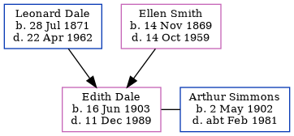

Edith Kate Simmons (née Dale) 1903 - 1989
[ Home ] | [ Calendar ] | [ Surnames Index ] | [ Errors ] | [ Family History ]A cashier and the child of Leonard Dale (a boiler attendant brickworks) and Ellen Smith, Edith Dale, the first cousin twice-removed on the father's side of Nigel Horne, was born in Temple Ewell, Kent, England on 16 Jun 19031,2,3,4,5,6 and baptised there at Ss Peter & Paul on 26 Jul 1903. She married Arthur Simmons (a plasterer) in The Register Office, Crowborough, Sussex, England on 2 Nov 19317.
During her life, she was living at 12 Douglas Road, Dover, Kent, England on 2 Apr 19118; at 52 Widred Road in Dover on 19 Jun 19212; and in Cuckfield, Sussex, England on 29 Sept 19393. In 1921 she was working at Timothy White Company in Dover.
She died on 11 Dec 1989 at The Green, Newport Pagnell, Buckinghamshire, England5.
Parents
- Leonard was born on 28 Jul 1871
- Ellen Elizabeth was born on 14 Nov 1869
Citations
- 1911 England Census Online publication - Provo, UT, USA: Ancestry.com Operations, Inc., 2011.Original data - Census Returns of England and Wales, 1911. Kew, Surrey, England: The National Archives of the UK (TNA), 1911. Data imaged from the National Archives, London, England.
- 1921 Census Of England & Wales - Findmypast (was age 18 and the daughter of the head of the household)
- 1939 Register - Findmypast (was the wife of the head of the household)
- England & Wales deaths 1837-2007 - Findmypast
- England & Wales, Death Index: 1984-2005 Online publication - Provo, UT, USA: The Generations Network, Inc., 2007.Original data - General Register Office. England and Wales Civil Registration Indexes. London, England: General Register Office. © Crown copyright. Published by permission of the Cont
- England & Wales, FreeBMD Birth Index, 1837-1915 Online publication - Provo, UT, USA: The Generations Network, Inc., 2006.Original data - General Register Office. England and Wales Civil Registration Indexes. London, England: General Register Office. © Crown copyright. Published by permission of the Cont
- England & Wales, Marriage Index: 1916-2005 Online publication - Provo, UT, USA: The Generations Network, Inc., 2009.Original data - General Register Office. England and Wales Civil Registration Indexes. London, England: General Register Office. © Crown copyright. Published by permission of the Cont
- 1911 Census for England & Wales - Findmypast (was age 7 and the daughter of the head of the household)
Media
England & Wales births 1837-2006 Transcription - BMD-B-1903-3-AZ-000150-202
Canterbury Baptisms Transcription - GBPRS-CANT-B-96419427
1939 Register Transcription - TNA-R39-2546-2546F-004-38
1911 Census for England & Wales - GBC/1911/RG14/04611/0603/4
England & Wales marriages 1837-2008 - BMD/M/1931/4/AZ/000278/018
1939 Register - TNA/R39/2546/2546F/004/39
England & Wales deaths 1837-2007 - BMD/D/1989/12/77556034
England Births & Baptisms 1538-1975 - R_885434989
1921 Census Of England & Wales - GBC/1921/RG15/04545/0449/03
Family Tree
Map
Generated by ged2site. Last updated on Jul 3, 2024
Known Issues
Country not included in country, or misspelt country 'Dover'